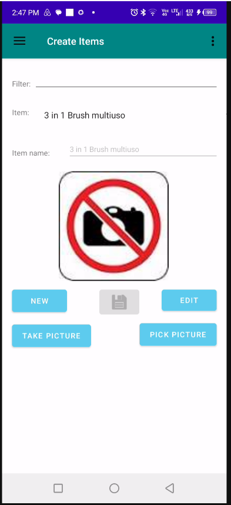
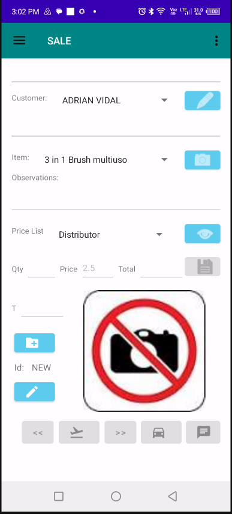
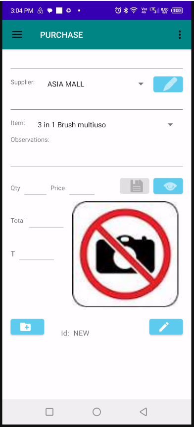

Conçue pour la Mobilité et les Opérations sur le Terrain
L'application mobile apporte les principales fonctionnalités de gestion directement sur les téléphones Android. Les utilisateurs peuvent créer des clients, gérer des fournisseurs, enregistrer des ventes et des achats, surveiller l'activité de l'entreprise, visualiser les informations géographiquement et synchroniser les données avec la plateforme centrale.
Que vous travailliez au bureau, rendiez visite à des clients, gériez des opérations sur le terrain ou souteniez des équipes à distance, l'application mobile permet de garder les informations de l'entreprise accessibles et à jour.
Connexion Sécurisée des Utilisateurs
Écran d'authentification offrant un accès sécurisé aux informations de l'entreprise, aux autorisations des utilisateurs et aux données synchronisées.

Tableau de Bord de l'Application Mobile
Écran central de navigation offrant un accès rapide aux clients, fournisseurs, stocks, achats, ventes, cartes, synchronisation et analyses.

Création de Clients et Fournisseurs
Créez des fiches clients et fournisseurs directement depuis l'appareil mobile, permettant au personnel de terrain d'enregistrer immédiatement de nouveaux partenaires commerciaux.

Répertoire des Clients et Fournisseurs
Parcourez et gérez les clients et fournisseurs existants, consultez leurs informations et accédez aux dossiers commerciaux depuis n'importe où.

Création de Produits
Enregistrez de nouveaux produits et articles d'inventaire directement sur le terrain, réduisant les délais et améliorant l'efficacité opérationnelle.

Catalogue des Articles en Stock
Consultez les produits disponibles, les informations d'inventaire et les détails des articles grâce à une interface mobile intuitive.

Enregistrement des Ventes
Enregistrez les ventes clients en temps réel, permettant aux représentants commerciaux de saisir les transactions immédiatement lors de leurs visites chez les clients.

Historique des Ventes
Consultez les ventes réalisées, surveillez les performances et vérifiez l'activité commerciale depuis des appareils mobiles.

Enregistrement des Achats
Créez des transactions d'achat et des commandes fournisseurs directement sur le terrain, garantissant la continuité des opérations sans retard.

Historique des Achats
Accédez à l'historique des achats, consultez l'activité des fournisseurs et analysez les opérations d'approvisionnement.

Synchronisation des Données
Synchronisez les clients, fournisseurs, produits, ventes, achats et données opérationnelles avec la plateforme de bureau.

Graphiques et Analyses Commerciales
Générez des rapports visuels, des indicateurs de performance et des statistiques d'entreprise directement depuis l'application mobile.

Cartes Géographiques Interactives
Visualisez les clients, fournisseurs et représentants commerciaux sur des cartes interactives, facilitant la planification des itinéraires, la gestion des territoires et les opérations sur le terrain.